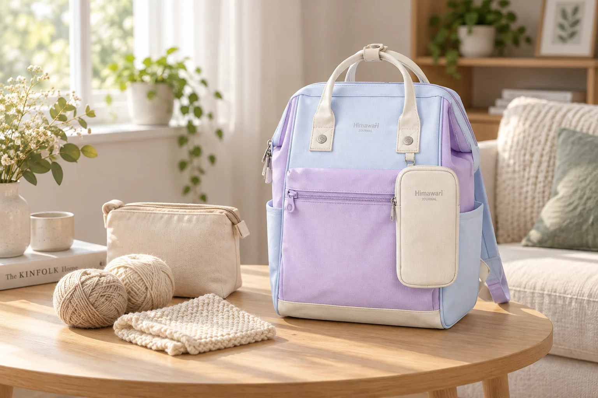

손뜨개와 함께 나가는 백팩: 실 끝이 엉키지 않는 준비

주말에 잠깐 손뜨개를 하러 나갈 때는 집에 있는 실과 도구를 전부 챙기기 쉽습니다. 하지만 밖에서 이어 할 작업 하나를 정하면 백팩 안의 구성도 간단해집니다. 오늘 뜰 부분에 필요한 실, 작업 중인 편물, 작은 도구를 한 묶음으로 만들고 집에서 하던 작업을 다시 시작할 수 있는 상태로 담아보세요.
오늘 이어 뜰 작업 하나부터
큰 담요와 작은 소품은 이동에 필요한 부피가 다릅니다. 앉아서 작업할 시간과 장소를 떠올린 뒤 한 가지 프로젝트를 고릅니다. 쓰지 않을 색의 실과 여분 도구까지 넣기보다 지금 연결된 실과 다음에 필요한 양을 먼저 확인하세요. 도안을 휴대전화로 본다면 해당 부분을 쉽게 찾도록 준비하고, 종이를 쓴다면 작업 위치를 표시해 실과 함께 둡니다.
실뭉치와 편물을 한 주머니에
작업물에서 이어진 실을 백팩 여러 칸에 걸쳐 넣으면 꺼낼 때 당겨지기 쉽습니다. 실뭉치와 편물이 함께 들어갈 매끈한 안쪽의 프로젝트 주머니를 사용하고, 실 끝이 바깥으로 길게 나오지 않게 정돈하세요. 너무 작은 주머니에 꽉 눌러 담기보다 입구를 열었을 때 편물을 먼저 꺼낼 여유를 남깁니다. 원단 표면이나 안쪽 장식에 실이 걸리는지도 비어 있을 때 살펴보면 좋습니다.
바늘 끝은 실 속에 숨기지 않기
뜨개바늘은 도구에 맞는 보관 케이스나 끝 보호 부품을 사용합니다. 작업 중인 코가 빠지지 않도록 쓰는 도구와 방법을 확인하고, 바늘 끝이 주머니를 뚫거나 가방 안감을 누르지 않는 방향으로 담으세요. 단단한 바늘을 휘어서 가방 폭에 맞추지 않습니다. 가위와 돗바늘 같은 작은 도구도 각각 끝이 보호되는 방식으로 모아 편물 사이를 손으로 더듬지 않도록 합니다.
작은 부품은 개수보다 돌아갈 자리
단수 표시링과 줄자, 작은 가위는 프로젝트 주머니 안의 작은 케이스 하나에 모읍니다. 작업을 시작할 때 필요한 것만 꺼내고 나머지는 닫아두세요. 바닥에 작은 부품을 흩어 놓으면 자리를 옮길 때 놓치기 쉽습니다. 외출용 도구를 새로 많이 사기보다 원래 쓰던 도구에 고정된 자리를 정하면 준비와 회수가 단순해집니다.
가방 지퍼 밖으로 실을 빼지 않기
백팩 안에 실뭉치를 둔 채 지퍼 틈으로 실을 당기면 레일이나 손잡이에 걸릴 수 있습니다. 작업할 자리에서는 프로젝트 주머니를 통째로 꺼내 허용된 깨끗한 곳에 두세요. 음료나 음식 가까이에 실과 가방을 펼치지 않는 것도 도움이 됩니다. 사진 속 No.1027은 취미 외출을 표현한 제품 예시이며, 작업물과 도구 케이스가 들어가는지는 실제 크기로 확인해야 합니다.
멈출 지점을 정하고 다시 담기
자리에서 일어나기 직전 급하게 쓸어 담기보다 도안의 현재 위치를 기록하고 작업물을 정돈합니다. 코와 바늘 상태를 확인한 뒤 실, 편물, 작은 도구를 처음의 묶음으로 되돌리세요. 실이 의자나 가방 끈에 걸리지 않았는지 둘러보고 주머니와 백팩을 차례로 닫습니다. 다음에 열었을 때 어디서 이어 할지 바로 알 수 있는 상태가 좋은 외출 수납의 기준입니다.
참고·안내
- Himawari No.1027 제품 정보
- 실제 No.1027 제품 사진을 참조한 AI 연출 이미지입니다. 실과 뜨개 도구용 파우치는 연출 소품이며 판매 구성이나 실제 수납량을 나타내지 않습니다.
자주 묻는 질문
백팩 안에서 실을 바로 뽑아 써도 될까요?
실이 지퍼에 걸릴 수 있으므로 작업 주머니를 꺼내 사용하고 실 끝이 가방 밖으로 이어지지 않도록 합니다.
큰 작품도 같은 방식으로 담으면 되나요?
작품과 도구를 함께 담은 부피를 확인하세요. 가방을 눌러 닫아야 한다면 별도 운반 가방을 사용하는 편이 좋습니다.